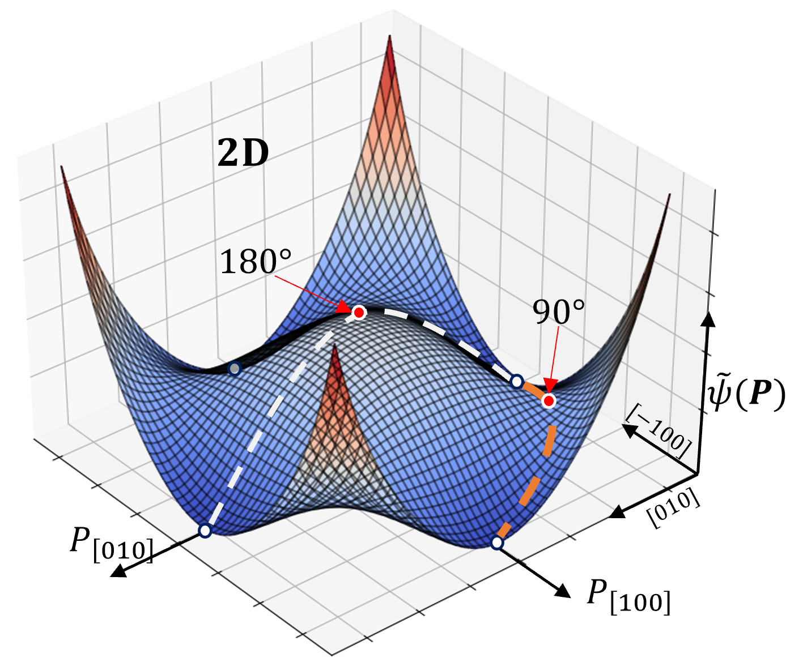

Introduction
Ferroelectric materials exhibit unique electromechanical coupling properties below their phase transition temperature, known as the Curie temperature. These properties are essential for applications in devices like actuators, transducers, and sensors. A defining feature of ferroelectric materials is the spontaneous alignment of electric dipoles into domain structures when cooled below the Curie temperature.
In this project, we focus on simulating the evolution of ferroelectric domains at room temperature in barium titanate, a material known for forming 180° and 90° domain walls. The goal is to understand the dynamics of these domain structures. The results of this work were previously published in the journal Computational Materials Science (Durdiev et al., https://doi.org/10.1016/j.commatsci.2022.111928). In the sections ahead, we will explore each step of the simulation process.
1. Phase-Field Model of Ferroelectrics
Phase-field modeling is a powerful computational method used to simulate the behavior of materials by representing their properties with smooth, continuous fields. Instead of tracking sharp interfaces directly, we use a mathematical function called an order parameter to describe the material's state. This method helps us study complex phenomena like the evolution of microstructures or domain patterns over time.
In the context of ferroelectrics, phase-field modeling allows us to understand how domain structures form and change under different conditions. These domains are essential for the unique electromechanical properties of ferroelectric materials, which are used in sensors, actuators, and other electronic devices. By using an order parameter to represent the electric polarization, you can simulate the domain dynamics and study how external factors, such as temperature or mechanical stress, influence them.
We employ an invariant formulation of the phase-field model in which the spontaneous polarization field \(P_i\) is taken as the primary order parameter. Domain evolution is governed by the time-dependent Ginzburg-Landau equation, $$ \beta\frac{\partial P_i}{\partial t} = -\frac{\delta \mathcal{H} }{\delta P_i} \quad,\quad \mathcal{H} = \int H(P_i,E_i,\varepsilon_{ij}) {\rm d}^3r, $$ where \(\beta\) is a positively definite mobility coefficient, \(H\) is the total energy density of the system. Ferroelectric phase-field models combine the Ginzburg-Landau-Devonshire theory with the theory of linear piezoelectricity, resulting in two main variables in addition to the phase-field order parameter: the displacement field \(u_i\) and the electric potential \(\phi\). Their gradients define the strain tensor \(\varepsilon_{ij}\) and the electric field \(E_i\): $$ \varepsilon_{ij}=\frac{1}{2}(u_{i,j} + u_{j,i}), \:\: E_i = -\phi_{,i}. $$ Hereafter, we use Einstein notation: repeated Latin indices \(i,j,k,l\) indicate summation from 1 to 3, and a comma in the subscript denotes a spatial partial derivative.
1.1 Energy Contributions
The total energy density consists of five parts, $$ H = H^{\rm elas}+H^{\rm elec}+H^{\rm piezo}+H^{\rm sep}+H^{\rm grad} $$ in which \(H^{\rm elas}\), \(H^{\rm elec}\), \(H^{\rm piezo}\), \(H^{\rm sep}\) and \(H^{\rm grad}\) represent the elastic energy density, the electrical energy density, the electromechanical coupling energy density, the domain separation energy density and the gradient energy density, respectively. These energy terms take the following specific form,
\begin{equation}\label{eq3} \begin{split} H^{\rm elas}({\varepsilon^{el}_{ij}}) &=\frac{1}{2} C_{ijkl} \varepsilon_{ij}^{el} \varepsilon_{kl}^{el} \\ H^{\rm elec}({P_i},{E_i}) &=-\frac{1}{2} \kappa_{ij} E_i E_j - P_i E_i \\ H^{\rm piezo}({\varepsilon^{el}_{ij}},{E_i},{P_i}) &= -e_{ijk}(P_i) \varepsilon_{ij} E_k \\ H^{\rm sep}({P_i}) &= \kappa_{\rm sep} \frac{G}{l} \tilde{\psi}(P_i) \\ H^{\rm grad}({P_{i,j}}) &= \frac{1}{2} \kappa_{\rm grad} \frac{G l}{P_0^2} P_{i,j} P_{i,j} \end{split} \end{equation}
The above quantities are explained in the following. Firstly, the stiffness tensor \(C_{ijkl}\) and the permittivity tensor \(\kappa_{ij}\) are assumed to be independent of the polarization, hence we assume cubic symmetry for the former, and isotropy for the later. Secondly, \(\varepsilon^{el}_{ij} = \varepsilon_{ij} - \varepsilon_{ij}^0 + \varepsilon_{ij}^{ext}\) denotes the elastic strain, which is composed of the total strain, \(\varepsilon_{ij}\), the spontaneous strain, \(\varepsilon^0_{ij}\) and the external mechanical strain, \(\varepsilon^{ext}_{ij}\). The spontaneous strain is assumed to be volume preserving and takes a deviatoric form: \begin{equation}\label{eq4} \varepsilon^0_{ij}=\frac{3}{2} \varepsilon_0 \bigg( \frac{|{P_i}|}{P_0} \bigg)^2 \bigg( n_i n_j - \frac{1}{3} \delta_{ij} \bigg) \end{equation} where \(\delta_{ij}\) is the Kronecker delta, \(|{P_i}|\) is the norm of the vector \(P_i\), \(n_i\) is the unit vector of \(P_i\), \(\varepsilon_0\) the maximum remanent strain, and \(P_0\) the maximum remanent polarization. For the piezoelectric tensor \(e_{ijk}\), the following form representing tetragonal symmetry is used \begin{equation}\label{eq5} \begin{split} e_{ijk}(P_i)=&\bigg( \frac{|{P_i}|}{P_0} \bigg)^3 \Big\{e_{33} n_i n_j n_k + e_{31} (\delta_{ij} - n_i n_j) n_k \\ &+ \frac{1}{2} e_{15} \big[ (\delta_{ki}- n_k n_i) n_j + (\delta_{kj}- n_k n_j) n_j \big] \Big\}, \end{split} \end{equation} in which \(e_{33}\), \(e_{31}\) and \(e_{15}\) are the linear piezoelectric constants at the poled state. The parameter \(G\) and \(l\) set the order of magnitude for free energy per unit area and width of the 180\(^{\circ}\) domain wall, while the coefficients \(\kappa_{\rm sep}\) and \(\kappa_{\rm grad}\) are used to calibrate the two parameters. The total electric field, \(E_i\), has two contributions, the depolarization field, \(E_i^{\rm d}\), and the external electric field, \(E_i^{\rm ext}\), i.e., \(E_i=E_i^{\rm d}+E_i^{\rm ext}\). The dimensionless function \(\tilde{\psi}(P_i)\) is chosen as the 6\(^{th}\) order Landau polynomial \begin{equation}\label{eq6} \begin{split} \tilde{\psi}(P_i) = & a_0 + \frac{a_1}{P_0^2} (P_1^2+P_2^2+P_3^2) + \frac{a_2}{P_0^4}(P_1^4+P_2^4+P_3^4) \\ &+\frac{a_3}{P_0^4}(P_1^2 P_2^2 + P_1^2 P_3^2+P_2^2 P_3^2) + \frac{a_4}{P_0^6}(P_1^6+P_2^6+P_3^6). \end{split} \end{equation} It has four minima in the 2D case and six minima in the 3D case, each minimum corresponds to one variant of the spontaneous polarization: 
1.2 Constitutive Equations
The constitutive equations used in this model are \begin{equation}\label{eq7} \begin{split} \sigma_{ij} &= C_{ijkl}\varepsilon_{kl}^{el} - e_{kij} E_k \\ D_i &= e_{ijk} \varepsilon_{jk}^{el} + \kappa_{ij} E_j + P_i. \end{split} \end{equation} Under quasistatic conditions and in the absence of free charges, the mechanical and electric fields are governed by linear momentum balance and Gauss' law \begin{equation}\label{eq:equil} \sigma_{ij,j}=0 \:\:\: \text{and} \:\:\: D_{i,i}=0. \end{equation} The temporal evolution of the spontaneous polarization is governed by the time-dependent Ginzburg-Landau equations \begin{equation}\label{eq9} \beta \frac{\partial P_i}{\partial t}=\kappa_{\rm grad} \frac{G l}{P_0^2} P_{i,jj} - \kappa_{\rm sep}\frac{G}{l} \frac{\partial\tilde{\psi}}{\partial P_i}-\frac{\partial H^{\rm bulk}}{\partial P_i} \end{equation} where \(H^{\rm bulk}=H^{\rm elas}+H^{\rm elec}+H^{\rm piezo}\).
2. Numerical Implementation with FFT
In this project, we use the Fourier spectral method for numerical implementation. This method is advantageous because it inherently assumes periodic boundary conditions, which eliminates the need to explicitly implement boundary conditions in the simulation. Since the Fourier Transform (FFT) operates as a periodic function, it also implies mechanical clamped boundary conditions in our model.
A key feature of the Fourier spectral method is its approximation of spatial derivatives. For example, the derivative \(\partial u/\partial x\) is computed using: $$ \frac{\partial u}{\partial x} \approx \text{IFFT}(i\xi \:\text{FFT}(u)) $$
Here, \(\xi\) represents the Fourier frequencies, and the combination of FFT (Fast Fourier Transform) and IFFT (Inverse Fast Fourier Transform) ensures efficient computation. This approach simplifies solving the equations in our simulations.
2.1 Solving Constitutive Equations
By expressing the equilibrium equations in terms of the mechanical displacement $u_i$ and electric potential $\phi$, and introducing a homogeneous reference medium characterized by elastic $C^0$, permittivity $\kappa^0$, and piezoelectric $e^0$ tensors (e.g., volume averages: $C^0 = \langle C \rangle$, $e^0 = \langle e \rangle$, $\kappa^0 = \langle \kappa \rangle$), the heterogeneous problem can be reformulated as a homogeneous problem with heterogeneous fields for the stress tensor $\tau_{ij}$ and dielectric displacement vector $\rho_i$. So, we rewrite constitutive equations as \begin{equation}\label{eq31_10} \begin{split} \sigma_{ij} &= C^0_{ijkl}(u_{k,l}-\varepsilon^0_{kl}) - e^0_{kij} (-\phi_{,k}) + \tau_{ij}, \quad \quad \sigma_{ij,j}=0 \\ D_i &= e^0_{ijk} (u_{j,k}-\varepsilon^0_{kl}) + \kappa^0_{ij} (-\phi_{,j}) + P_i + \rho_i, \quad \quad D_{i,i}=0 \end{split} \end{equation} or \begin{equation} \begin{split} C^0_{ijkl}(u_{k,lj}-\varepsilon^0_{kl,j}) + e^0_{kij} \phi_{,kj} + \tau_{ij,j}=0 \\ e^0_{ijk} (u_{j,ki}-\varepsilon^0_{kl,i}) - \kappa^0_{ij} \phi_{,ji} + P_{i,i} + \rho_{i,i}=0 \end{split} \end{equation} Now apply the FFT scheme for derivative approximation, for example $\sigma_{ij,j}$ in Fourier space becomes $i\xi_j\hat{\sigma}_{ij}$, where $\hat{\sigma}=fft(\sigma)$. Hence, in Fourier space, the equations take the form \begin{equation}\label{eq31_11} \begin{split} C^0_{ijkl}\xi_l\xi_j\hat{u}_k + e^0_{kij}\xi_k\xi_j\hat{\phi} &= \textbf{i}\xi_j(\hat{\tau}_{ij}-C^0_{ijkl}\hat{\varepsilon}_{kl}^0) \\ e_{ijk}^0\xi_k\xi_i\hat{u}_j - \kappa_{ij}^0\xi_j\xi_i\hat{\phi} &= \textbf{i}\xi_i(\hat{\rho}_i+\hat{P}_i-e^0_{ijk}\hat{\varepsilon}_{jk}^0) \end{split} \end{equation}
where $\textbf{i}$ is the complex number(i.e. $\textbf{i}=\sqrt{-1}$), and ${\xi_i}$ denotes the corresponding frequencies in Fourier space, and the circumflex represents the Fast Fourier Transform. By making some assumptions, e.g. $\hat{\alpha}_{ij}=\hat{\tau}_{ij} - C^0_{ijkl}\hat{\varepsilon}_{kl}^0$ and $\hat{\beta}_i=\hat{\rho}_i+\hat{P}_i-e^0_{ijk}\hat{\varepsilon}_{jk}^0$, we rewrite in a simple form with its solution as \begin{equation}\label{eq31_12} \boldsymbol{A} \boldsymbol{x} = \boldsymbol{b} \:\: \text{and} \:\: \boldsymbol{x} = \boldsymbol{A}^{-1}\boldsymbol{b} \end{equation} where $\boldsymbol{A}$ is a 4$\times$4 matrix, $\boldsymbol{x}$ and $\boldsymbol{b}$ are 1$\times$4 vectors whose components read, $i,j,k,l=1,2,3$ \begin{equation}\label{b6} \begin{split} A_{ij} &= C^0_{ijkl}\xi_l\xi_j \\ A_{4i}&=A_{i4} = e^0_{kij}\xi_k\xi_j \\ A_{44} &= -\kappa_{ij}^0\xi_j\xi_i \end{split} \:\:;\:\: \boldsymbol{x}= \left[\begin{array}{c} \hat{u}_i \\ \hat{\phi} \end{array}\right]_{1\times4} \:\:;\:\: \boldsymbol{b}= \left[\begin{array}{c} \textbf{i}\xi_j\hat{\alpha}_{ij} \\ \textbf{i}\xi_i\hat{\beta}_i \end{array}\right]_{1\times4} \end{equation} and its solution (one must be here careful with the indices, $n=1,2,3$) \begin{equation}\label{b7} \begin{bmatrix} \hat{u}_i \\ \hat{\phi} \end{bmatrix} = \begin{bmatrix} A_{ik}^{-1} & A_{i4}^{-1} \\ A_{4k}^{-1} & A_{44}^{-1} \end{bmatrix} \begin{bmatrix} \textbf{i}\xi_l\hat{\alpha}_{kl} \\ \textbf{i}\xi_n\hat{\beta}_n \end{bmatrix}. \end{equation} Here $\boldsymbol{A}^{-1}$ denotes the inverse of $\boldsymbol{A}$. The Fourier transform of the mechanical displacement $\hat{u}_i$ and electric potential $\hat{\phi}$ can be evaluated as \begin{equation*}\label{b8} \begin{split} \hat{u}_i &= \textbf{i}A_{ik}^{-1}\xi_l\hat{\alpha}_{kl} + \textbf{i} A_{i4}^{-1}\xi_n\hat{\beta}_n \\ \hat{\phi} &= \textbf{i}A_{4k}^{-1}\xi_l\hat{\alpha}_{kl} + \textbf{i}A_{44}^{-1}\xi_n\hat{\beta}_n \end{split} \end{equation*} where the symmetry of ${\hat{\alpha}_{kl}}$ has been used. Therefore \begin{equation}\label{b9} \begin{split} \hat{u}_i &= \frac{\textbf{i}}{2}(A_{ik}^{-1}\xi_l + A_{il}^{-1}\xi_k)\hat{\alpha}_{kl} + \textbf{i} A_{i4}^{-1}\xi_n\hat{\beta}_n \\ \hat{\phi} &= \frac{\textbf{i}}{2}(A_{4k}^{-1}\xi_l + A_{4l}^{-1}\xi_k)\hat{\alpha}_{kl} + \textbf{i}A_{44}^{-1}\xi_n\hat{\beta}_n. \end{split} \end{equation} The mechanical strain, $\varepsilon_{ij}$, and electric field, $E_i$ in Fourier space \begin{equation}\label{b10} \hat{\varepsilon}_{ij}=\frac{\textbf{i}}{2}(\xi_j\hat{u}_i + \xi_i \hat{u}_j) \:\:\: \text{and} \:\:\: \hat{E}_n = -\textbf{i}\xi_n \hat{\phi}, \end{equation} Next, we obtain \begin{equation}\label{b11} \begin{split} \hat{\varepsilon}_{ij}=-\hat{\Gamma}^0_{ijkl} \hat{\alpha}_{kl} - \hat{\Phi}^0_{ijn}\hat{\beta}_n \:\: \text{and} \:\: \hat{E}_n = \hat{\Phi}^0_{nij}\hat{\alpha}_{ij} + \hat{\Lambda}^0_{ni}\hat{\beta}_i. \end{split} \end{equation} $\hat{\Gamma}_{ijkl}^0$, $\hat{\Phi}^0_{nij}$ and $\hat{\Lambda}_{ni}^0$ are the Fourier transforms of the Green's operators (note, $(\hat{\Phi}^0_{nij})^T = \hat{\Phi}^0_{ijn}$). The tensorial components of these operators read \begin{equation}\label{b12} \begin{split} \hat{\Gamma}_{ijkl}^0 &= \frac{1}{4}(A_{ik}^{-1}\xi_l\xi_j + A_{il}^{-1}\xi_k\xi_j + A_{jl}^{-1}\xi_k\xi_i + A_{jl}^{-1}\xi_k\xi_i ) \\ \hat{\Phi}^0_{nij} &= \frac{1}{2} (A_{4j}^{-1}\xi_i\xi_n + A_{4i}^{-1}\xi_j\xi_n) \\ \hat{\Lambda}_{ni}^0 &= A_{44}^{-1} \xi_n \xi_i. \end{split} \end{equation}
2.1.1 FFT-based Algorithm
Now based on the above derivation we can build an algorithm for solving coupled piezoelectric equations with the FFT.
We introduce the following iterative algorithm for the solution of strain tensor $\varepsilon_{ij}$ and electric field $E_i$:
Iterative Algorithm for Solving $\varepsilon_{ij}$ and $E_i$
This algorithm solves the strain tensor $\varepsilon_{ij}$ and the electric field $E_i$ iteratively.
Initialization: (for calculated $\hat{\Gamma}_{ijkl}^0$, $\hat{\Phi}^0_{nij}$ and $\hat{\Lambda}_{ni}^0$)
$$\varepsilon_{ij} = 0, \quad E^d_i = 0$$
Iteration:
- Compute elastic strain and electric field: $$\varepsilon^{el}_{ij} = \varepsilon_{ij} + \varepsilon^0_{ij} + \varepsilon^{ext}_{ij}$$ $$E_i = E^d_i + E^{ext}_i$$
- Calculate stress and electric displacement: $$\sigma_{ij} = C_{ijkl}\varepsilon_{kl}^{el} - e_{kij} E_k$$ $$D_i = e_{ijk} \varepsilon_{jk}^{el} + \kappa_{ij} E_j + P_i$$
- Check convergence: $$\delta_{\sigma} = \frac{\|\sigma\| - \|\sigma^{old}\|}{\|\sigma^{old}\|}$$ $$\delta_{D} = \frac{\|D\| - \|D^{old}\|}{\|D^{old}\|}$$ Stop if $$\max(\delta_{\sigma}, \delta_{D}) < 10^{-4}$$
- Compute residuals: $$\tau_{ij} = \sigma_{ij} - \left(C^0_{ijkl}\varepsilon_{kl}^{el} - e^0_{kij}E_k\right)$$ $$\rho_i = D_i - \left(e_{ijk} \varepsilon_{jk}^{el} + \kappa^0_{ij} E_j + P_i\right)$$
- Apply FFT to residuals: $$\hat{\tau}_{ij} = \textit{fft}(\tau_{ij})$$ $$\hat{D}_i = \textit{fft}(D_i)$$
- Update variables in Fourier space: $$\hat{\varepsilon}_{ij} = -\hat{\Gamma}_{ijkl}^0 \hat{\alpha}_{kl} - \hat{\Phi}_{ijn}^0 \hat{\beta}_n$$ $$\hat{E}_n = \hat{\Phi}^0_{nij}\hat{\alpha}_{ij} + \hat{\Lambda}_{ni}^0 \hat{\beta}_i$$
- Apply boundary conditions in Fourier space: $$\hat{\varepsilon}_{ij}(\xi = 0) = 0$$ $$\hat{E}_i(\xi = 0) = 0$$
- Transform back to real space: $$\varepsilon_{ij} = \textit{ifft}(\hat{\varepsilon}_{ij})$$ $$E_i = \textit{ifft}(\hat{E}_i)$$
Here, $\textit{fft}$ and $\textit{ifft}$ represent the Fast Fourier Transform and its inverse, respectively. After transforming equations to Fourier space, the mechanical displacement field and electric potential are computed using Green's operators. These operators, defined in Fourier space, allow direct calculation of strain and electric fields. This algorithm is simple to implement and enables faster computations.
2.2 Solving Phase-Field Equation
We use a semi-implicit spectral algorithm for solving the polarization equation.
By taking the Fourier transformation of both sides of the phase-field equation the spatial discretization becomes: \begin{equation}\label{fft_phase_1} \frac{\partial\{{P}_i\}_\xi}{\partial{t}}= \beta^{-1}\Bigg( \kappa_{grad} \frac{G l}{P_0^2}\xi^2 \{{P_i}\}_\xi - \kappa_{sep}\frac{G}{l} \bigg\{\frac{\partial{\psi}}{\partial {P}_i}\bigg\}_\xi-\bigg\{\frac{\partial{H}^{bulk}}{\partial{P}_i}\bigg\}_\xi \Bigg) \end{equation} where $\{\cdot\}_\xi$ is the Fourier transform of the quantity inside the bracket and $\xi$ is the vector in Fourier space, in 2D, $\xi=(\xi_1,\xi_2)$ with a magnitude $\sqrt{\xi_1^2+\xi_2^2}$. By treating the linear laplacian operator implicitly and the nonlinear terms explicitly, the semi-implicit form is \begin{equation*}\label{eq14} \frac{ \{{P}_i\}_\xi^{n+1} - \{{P}_i\}_\xi^{n} }{ \Delta t } = \beta^{-1}\Bigg(\kappa_{grad} \frac{G l}{P_0^2} \xi^2 \{{P_i}\}_\xi^{n+1} - \kappa_{sep} \frac{G}{l} \bigg\{\frac{\partial{\psi}}{\partial {P}_i}\bigg\}_\xi^n-\bigg\{\frac{\partial{H}^{bulk}}{\partial{P}_i}\bigg\}_\xi^n\Bigg) \end{equation*} where $\Delta t$ is the time increment between $n+1$ and $n$. By rearranging the above equation, we obtain \begin{equation}\label{eq15} \{{P}_i\}_k^{n+1} = \frac{\{{P}_i\}_k^{n} - \Delta t \beta^{-1}\kappa_{sep} \dfrac{G}{l} \bigg\{\dfrac{\partial{\psi}}{\partial {P}_i}\bigg\}_k^n - \Delta t\beta^{-1} \bigg\{\dfrac{\partial{H}^{bulk}}{\partial{P}_i}\bigg\}_k^n}{ 1 + \Delta t \beta^{-1}\kappa_{grad} \dfrac{G l}{P_0^2} \xi^2 }. \end{equation}